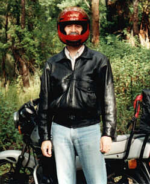
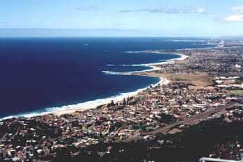
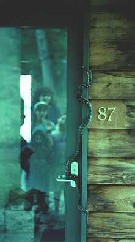

Home, Family, Special Friends and Wonderful Places

Originally from Canada, we called Australia home for five years and moved to Texas in the summer of 1998. In the transition, we exchanged our home in the rainforest for a home in the suburbs, our parrots and wallabies for an idiot dog named named "Sydney" in honor of the beautiful city Down Under, and the relaxed lifestyle of the Aussies for the craziness of a big American city. But we all agree that no matter where we go, we're home, as long as we're together.

Here's the hubby....all decked out in his favourite gear, next to the wet
suit. Australia provided him with the inspiration and the weather
to pursue some of his favourite outdoor activities, and he's really missing that bike
and the surfboard now that we're in Texas!

This is the beautiful Illawarra Coast where we lived in Australia. The
sun shines and the ocean sparkles like no other place that we've lived.
Look up "Wollongong" in your atlas. This photo is looking south from
the top of the escarpment over the city of Wollongong, New South Wales,
Australia.

This is just one of the many friends(?) we made down under. This
diamond python greeted us as we arrived back home with the groceries.
It was difficult to get into the house, needless to say. Notice how we
are reflected in the glass in the door, pondering our next move? No....
they aren't poisonous, just scarey looking!